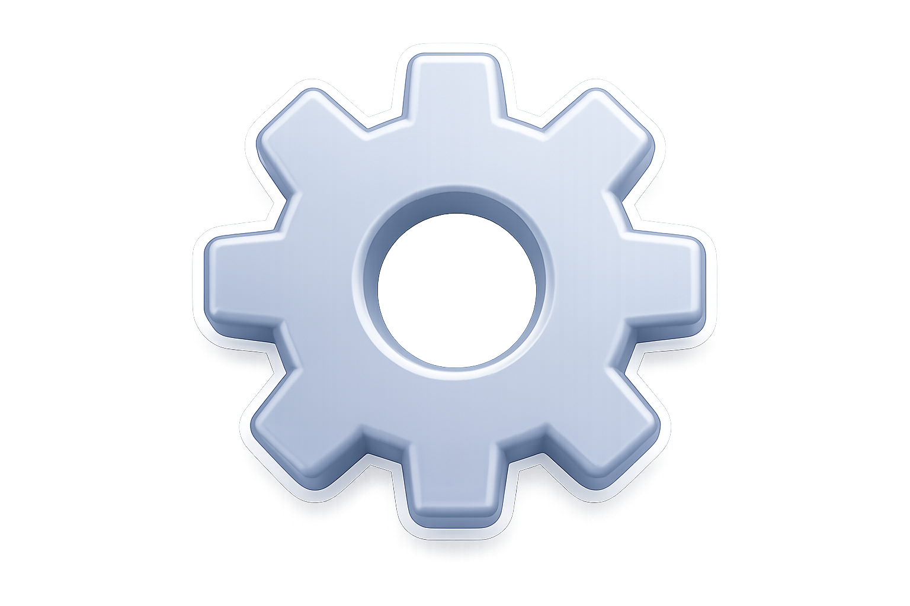
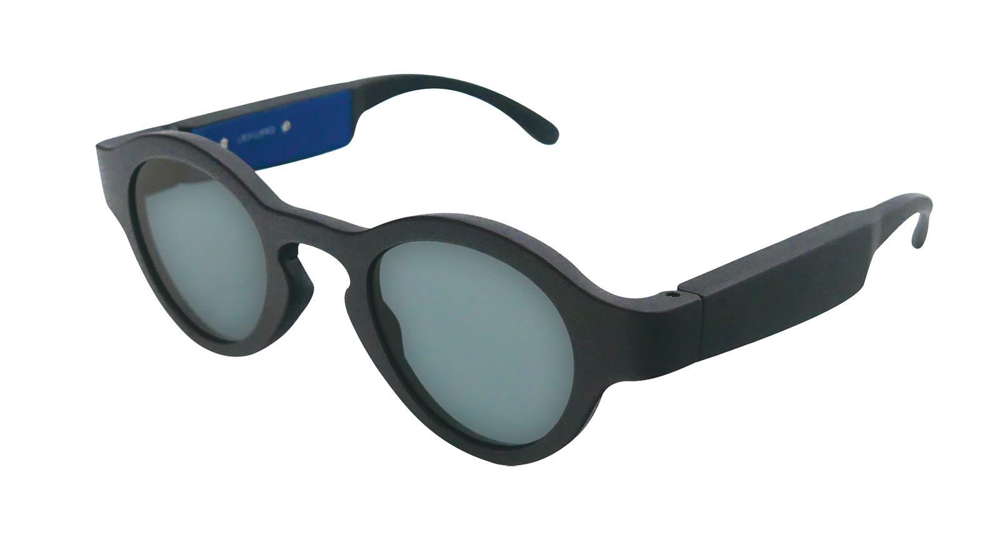

Nos produits
Gamme Lexilens — technologie neurovisuelle française
6 modèles
🇫🇷 Origine France Garantie
Face
3/4
Taille
Calibre / Nez
Branche


Certaines personnes relisent plusieurs fois, se fatiguent vite ou perdent le fil.
Lexilens est fait pour elles.
Grâce à une modulation lumineuse invisible, Lexilens empêche le doublement de se former.
Résultat : L'expérience de lecture est transformée - une lecture plus naturelle, plus fluide, avec moins de fatigue, une compréhension facilitée et une meilleure concentration. Dès les premières secondes, de nombreuses personnes ressentent la différence.